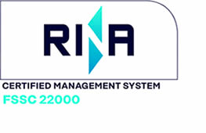

Control
de calidad
LABORATORIO
En nuestro laboratorio de control de Calidad, contamos con personal altamente especializado y con moderno equipamiento, lo que permite asegurar el resultado de los controles
La calidad de nuestros productos y la gran flexibilidad para fabricarlos, derivan de nuestra propia definición de los diagramas de molienda más apropiados para cada necesidad.
Calidad
final
La calidad final de nuestros productos es el resultado de la aplicación minuciosa de nuestro sistema de control de calidad fundamentado en cinco puntos:
CERTIFICACIONES
Más de un siglo en la industria molinera nos permite garantizar la calidad de nuestros productos. Desde la recepción de la materia prima hasta el envasado del producto final, aplicamos exhaustivos controles de calidad e inocuidad soportados en moderna tecnología, conducidos por profesionales formados en la empresa.
Nuestros procesos para recepción, limpieza, acondicionamiento y molienda de trigo así como la clasificación y almacenamiento de harinas, productos derivados de la molienda y subproductos, están comprometidos con la inocuidad alimentaria y se producen bajo las normas FSSC 22000 (Seguridad Alimentaria).
Normas
de
inocuidad
La inocuidad alimentaria es una gran responsabilidad de la industria alimentaria, por lo que los Sistemas de Gestión de Inocuidad Alimentaria han ganado una gran importancia.
Molino Campodónico ha implementado y certificado su sistema de Gestión de Inocuidad basado en los lineamientos del estándar FSSC 22.000, reconocido por GFSI. Esta norma ha sido elaborada para asegurar que la implementación de un sistema de gestión de inocuidad funciona correctamente y garantiza la seguridad de los productos alimentarios.
La industria tiene la responsabilidad de elaborar productos que cumplan con los diferentes requisitos de los clientes, las reglamentaciones y legislaciones vigentes, el entorno y las tendencias generales. Política de Inocuidad Alimentaria El Directorio de La Organización se compromete a implementa
Política
de
Inocuidad
Alimentaria
El Directorio de La Organización se compromete a implementar y mantener actualizado el Sistema de Gestión de Inocuidad, con la participación de todo su personal.
Para ello se asegurará de:
Brindar productos de calidad, garantizando la inocuidad de los mismos, en condiciones competitivas que satisfagan las expectativas y requerimientos de sus clientes, cumpliendo los requisitos legales y reglamentarios aplicables.
Alinear esfuerzos de todas las personas de la organización, asegurando su competencia a través de su capacitación, permitiendo su desarrollo y motivación.
Trabajar bajo un sistema de mejora continua que garantice la eficiencia de procesos sin descuidar la seguridad e higiene industrial y la preservación del medio ambiente.
Asegurar que las instalaciones y el personal se encuentren al más alto nivel de higiene, limpieza y orden.
Considerar a sus clientes y proveedores como verdaderos socios.
Asegurar la gestión de comunicación, tanto interna como externa.